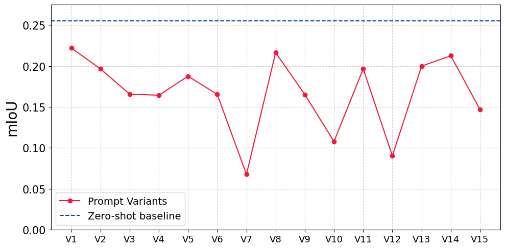
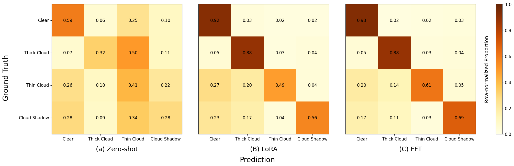
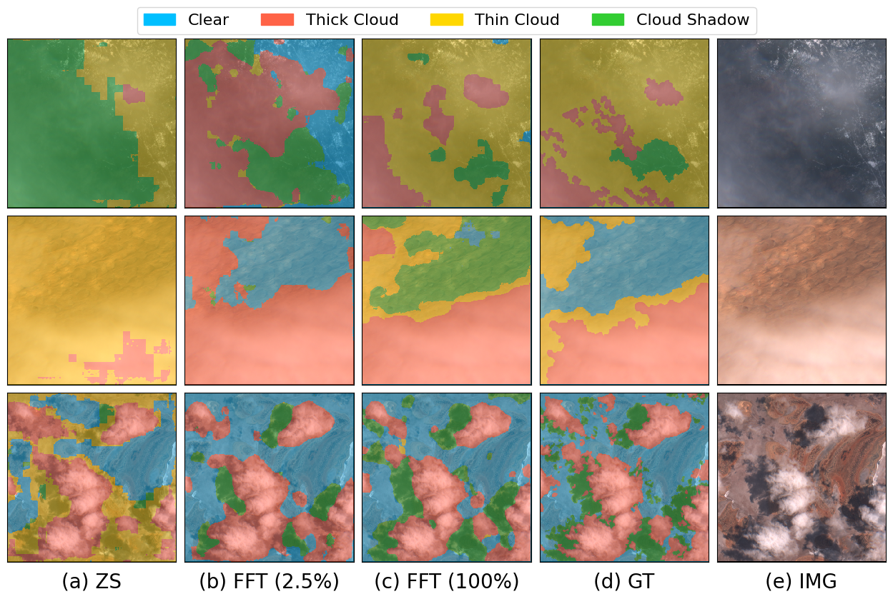

Most production AI systems today reach for pretrained models and prompt them. A recent study found 70% of production AI systems rely on prompting rather than weight tuning. The logic is simple: prompting is cheap, labeling is expensive, and if the pretrained model is good enough, language can steer it the rest of the way.
For natural images, this mostly works. For satellite imagery, we found it doesn't work at all, and the cheap alternative to prompting turned out to be cheaper than we expected.
This post summarizes our paper, Low-Data Supervised Adaptation Outperforms Prompting for Cloud Segmentation Under Domain Shift, accepted at EarthVision 2026 (CVPR Workshop).
The setup
We picked a task where the domain shift from natural images is severe on two axes at once: cloud segmentation in Sentinel-2 satellite imagery.
- Visually: overhead perspectives, multispectral sensors, atmospheric phenomena that blend into haze and shadows that lack hard edges. Nothing like the object-centric photos CLIP was trained on.
- Linguistically: vocabulary like "optically thin cirrus" or "cloud shadow" barely exists in CLIP's image-caption training corpus.
We used CLIPSeg, a promptable segmentation model built on a frozen CLIP backbone, and evaluated it on CloudSEN12+, the largest expert-labeled cloud segmentation dataset available. The question was simple: under this kind of compound shift, can prompt engineering alone compensate, or is supervised adaptation necessary?
Finding 1: Every prompt we tried made things worse

We designed 60 prompt variants (15 per class) spanning four strategies: minimal single-word labels, domain-specific meteorological terms, appearance descriptors, and contextual phrases. "White cloud," "wispy cloud," "bright white opaque cloud," "shadow beneath cloud," and so on.
Every single one underperformed the simple class-label baseline of 0.255 mIoU. The worst engineered prompt scored 0.07 mIoU, a 73% relative degradation. The best engineered variants clustered around 0.20 to 0.22, still clearly below baseline.
The most interesting failure came from negation. Prompts like "not cloud" or "not haze" produced the worst results of all. This isn't a quirk; it's architectural. CLIP's contrastive training does use negative examples, but those teach the model that specific images and captions don't match, not that the word "not" is a semantic operator. The text encoder never saw "not cloud" paired with cloud-free images during training. The embedding for "not cloud" remains dominated by "cloud." The word "not" carries no learned visual meaning.
This matters for a broader point: learnable prompt methods like CoOp and CoCoOp optimize within the same embedding space. If the space itself is misaligned with the target domain, prompt optimization runs into the same ceiling. The bottleneck isn't the prompt strategy. It's the visual encoder.
Finding 2: The crossover point is shockingly low

Having established that prompting can't bridge the gap, we asked the complementary question: how much labeled data does it take to beat the zero-shot baseline?
Eight images.
At 0.1% of the training set, approximately 8 labeled patches, both LoRA and full fine-tuning already surpass the zero-shot baseline on aggregate mIoU. At 5 to 10% of the data (roughly 425 to 850 images), we recover about 85% of the maximum achievable mIoU. Beyond 30%, additional labels yield diminishing returns that rarely justify the annotation cost.
This fundamentally changes the deployment math. The usual argument for zero-shot is "labeling is expensive, so we prompt." But if eight images is the crossover, that argument doesn't hold, even for a small research team or a practitioner working alone. Labeled data isn't the expensive alternative to prompting; for domains with real distribution shift, it's the worthwhile path.
Finding 3: LoRA vs. FFT is a task-structure decision, not a compute tradeoff

The conventional framing of LoRA vs. full fine-tuning is about resources: LoRA trades a little accuracy for a lot of parameter efficiency. Our results complicate that framing.
Across the full data sweep, FFT outperformed LoRA by a consistent 0.03 to 0.09 mIoU. But the aggregate number hides where the gap actually lives.
For spectrally distinct classes, clear sky and thick cloud, LoRA and FFT perform nearly identically. Both raise clear-sky classification from 0.59 (zero-shot) to ~0.92. Both push thick cloud from 0.32 to 0.88. When the classification boundary is visually unambiguous, the low-rank subspace is expressive enough.
For spectrally ambiguous classes, the picture changes sharply. On thin cloud, FFT reaches 0.61 classification accuracy against LoRA's 0.49, a 12-point gap. On cloud shadow, it's 0.69 vs. 0.56, a 13-point gap. These classes require fine-grained reshaping of representations to capture subtle spectral overlap: semi-transparent cloud layers against varied surface reflectance, shadow regions against dark terrain. Those distinctions are multi-dimensional in embedding space and exceed what a constrained low-rank subspace can express.
The practical rule that falls out: if your task is well-defined boundaries (separating cloud from no-cloud, say), LoRA is the right default. If your task involves spectrally ambiguous classes that downstream pipelines actually depend on, and in atmospheric correction, thin cloud and cloud shadow absolutely do, FFT's extra parameter cost is worth it.
The supervision dip: a warning about low-data fine-tuning

One finding surprised us and deserves its own mention. For thin cloud and cloud shadow, supervised adaptation initially degrades performance below the zero-shot baseline before recovering.
Both classes dip at 0.5 to 1% labeled data and recover at 2.5 to 5%. The mechanism: too few representative examples aren't enough to reshape embeddings toward the target distribution, but are enough to disrupt whatever coherent structure existed in the zero-shot embedding. You get the worst of both regimes, you've broken the zero-shot representation without building a supervised one in its place.
The aggregate mIoU curve doesn't show this, because gains on clear sky and thick cloud mask it. If you're fine-tuning with under 1% labeled data, monitor per-class performance, not just the mean.
Stratified sampling strategies that guarantee minority-class representation in low-data subsets are a straightforward mitigation.
What this means for practitioners
If you're deploying vision-language models to a domain that diverges significantly from natural image pretraining such as satellite imagery, medical imaging, microscopy, industrial inspection, the defaults from the natural image literature may not apply. A few concrete takeaways:
- Don't assume prompting will bridge a real domain gap. Test a zero-shot baseline, but budget for supervision. The cost of a few hundred labels is almost certainly lower than the cost of deploying a model that fails on your minority classes.
- Small label budgets go further than you'd expect. Targeting 5 to 10% of a reasonable dataset often recovers most of the achievable performance. Full labeling is rarely the right target.
- Choose adaptation based on where your hard classes live. If your difficult classes are spectrally or visually ambiguous, prefer full fine-tuning. If they're well-separated, LoRA is fine.
- Watch per-class metrics in low-data regimes. Aggregate mIoU can hide real harm to the classes you probably care about most.
The broader claim is this: for specialized imagery, the choice to prompt rather than fine-tune has mostly been inherited from a different deployment context. It deserves to be re-examined.

The code, and models are available on GitHub and HuggingFace. This work was done at the University of Georgia's Lab for Geoinformatics and AI Modeling (GAIM).